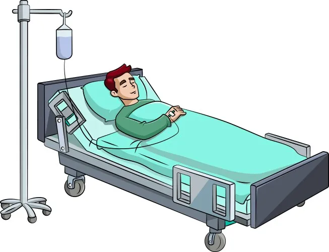
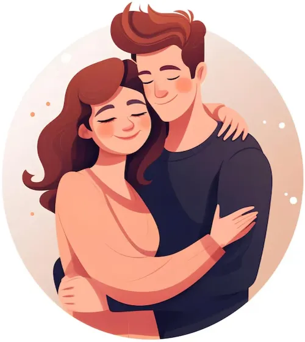

«Руководство пользователя» — 4 макета
Слово владельца: «В оригинальном Ndim оно былт с картинками, с кнопками HTML, с таблицами», «если был емодзи — он был красочный», «наводим красоту с стиль».
Канон снят чтением ndim_old/storage/public/um.html: 66 картинок, 2 таблицы,
2 круглые кнопки-образца. Цвета смайликов не подобраны на глаз — замерены: каждый из
одиннадцати CSS-фильтров 1.x отрисован в Chromium и снят пиксель
(#d50000 → #2bda00, «десятка» — многоцветный файл оригинала).
Общее для всех четырёх, это не предмет выбора: картинки 1.x возвращаются на свои места · шкала снова со звёздами и цветными смайликами · обе круглые кнопки-образца возвращаются · текст владельца не меняется ни на букву · разделы про экраны 1.x по-прежнему отсутствуют осознанно. Различаются варианты тем, как собрана страница и во что превращена шкала.
V1 «Как было»
дословный переносРовно 1.x, только в токенах 2.0: одна колонка, заголовки разделов, картинки по центру, шкала — таблица из двух колонок, кнопки-образцы кружками по центру. Плюс: ноль изобретения — человек, знавший 1.x, узнаёт страницу. Минус: длинный документ без оглавления — 9 разделов подряд, и найти «Шкалу оценок» можно только прокруткой.
В Пространстве NDim существует 11 возможных оценок измерений от 0 (нуля) до 10 (десяти):
| Оценка | Описание |
|---|---|
0
|
Абсолютная безусловная ненависть. Вам это не просто не нравится, Вы ненавидите это всей своей душой… |
10
|
Безусловная любовь. Вы любите это всей своей душой… |

На суб-вкладке «Все» есть кнопка предложить новое измерение:
Нажав по ней, Вы можете открыть форму предложения нового измерения.
V2 «Главы-карточки»
язык продуктаКаждый раздел — карточка-виджет (тот же рецепт, что у «Связей» и «Пространства»), иллюстрация становится её обложкой во всю ширину. Сверху — липкое оглавление чипами. Плюс: руководство перестаёт быть простынёй, разделы видны и листаются; страница выглядит частью 2.0, а не вставленным документом. Минус: обложка режет картинку по краям; дальше всего от вида 1.x.
Мысленные эксперименты
Шкала оценок 0–10
11 возможных оценок измерений:
0
|
Абсолютная безусловная ненависть. Вы ненавидите это всей душой… |
10
|
Безусловная любовь. Вы любите это всей своей душой… |
Поиск и предложение
V3 «Живая шкала»
учит жестомСтраница как V1, но таблица шкалы заменена настоящим рядом из 11 оценок — тем же, что человек увидит в карточке измерения. Он тыкает звезду прямо в руководстве и читает описание именно этой оценки. Плюс: руководство перестаёт описывать жест словами и показывает его; вся шкала видна одним взглядом, а не одиннадцатью строками таблицы. Минус: таблица «оценка → описание» как список исчезает — читать подряд все 11 описаний уже нельзя.
Нажмите на оценку, чтобы прочитать, что она означает:
5 — Нейтральное отношение. Вам это ни нравится, ни не нравится. Не вызывает в Вас никаких эмоций…
выбрана оценка 5 из 10
Представьте, что Вы оказались на необитаемом острове…

V4 «Документация»
оглавление сбокуНа десктопе — липкое оглавление слева и колонка текста справа; картинки обтекаются текстом, а не разрывают его. На телефоне — как V1, одной колонкой. Плюс: в длинном документе видно, где ты и что дальше; десктоп перестаёт быть растянутым телефоном (та же боль, что решала шапка V3-А). Минус: два разных вида одной страницы — больше вёрстки и больше мест сломаться; на телефоне выигрыша нет вовсе.
↓ так это выглядит на десктопе (здесь ужато)

Представьте, что Вы находитесь на борту самолёта в очень длительном перелёте. Попробуйте оценить, с какой вероятностью Вы бы хотели, чтобы именно этот объект культуры был с Вами.
10 баллов означают, что Вы безмерно рады…
| Оц. | Описание |
|---|---|
0
|
Абсолютная безусловная ненависть… |
10
|
Безусловная любовь… |
Что возвращается во всех четырёх
Это не предмет выбора — это утраченное содержимое 1.x. Показано отдельно, потому что в кадре телефона оно оказывается ниже сгиба.
Кнопки-образцы 1.x (80×80, радиус 30, фон rgb(210,230,255))
Предложить измерение
Поиск измерений
Полная шкала со звёздами и цветными смайликами (цвета замерены с 1.x)
Иллюстрации 1.x, вернувшиеся в проект


Что будет сделано в любом случае, каким бы ни был выбор: те же правила поедут на соседние страницы Settings — «Условия», «Политика», «Отказ от ответственности» получат ту же типографику, а «Поддержка», «Пожертвование» и «Об авторе» уже получили иллюстрации 1.x, настоящие иконки на кнопках, цветной ❤️ и центровку текста, как было в оригинале.